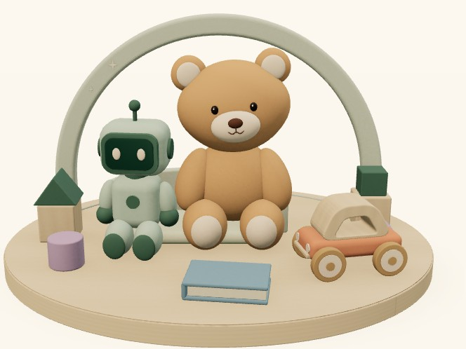
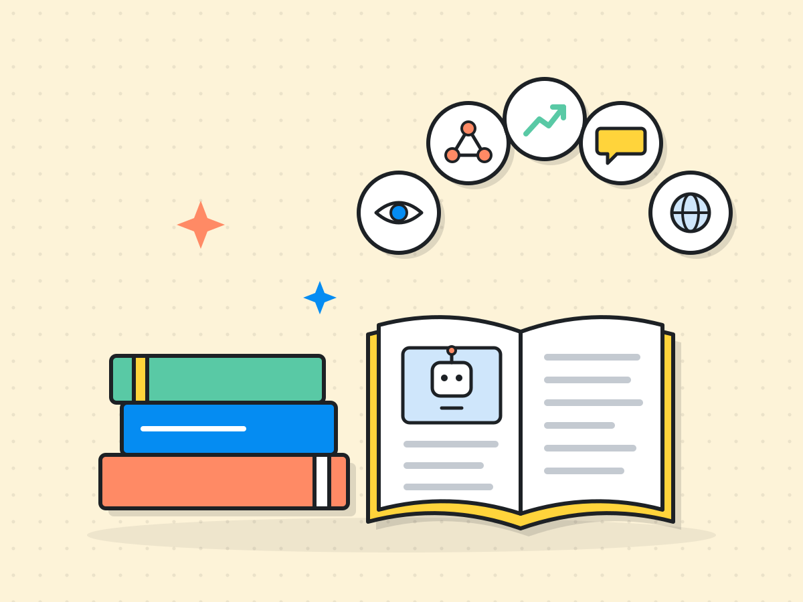
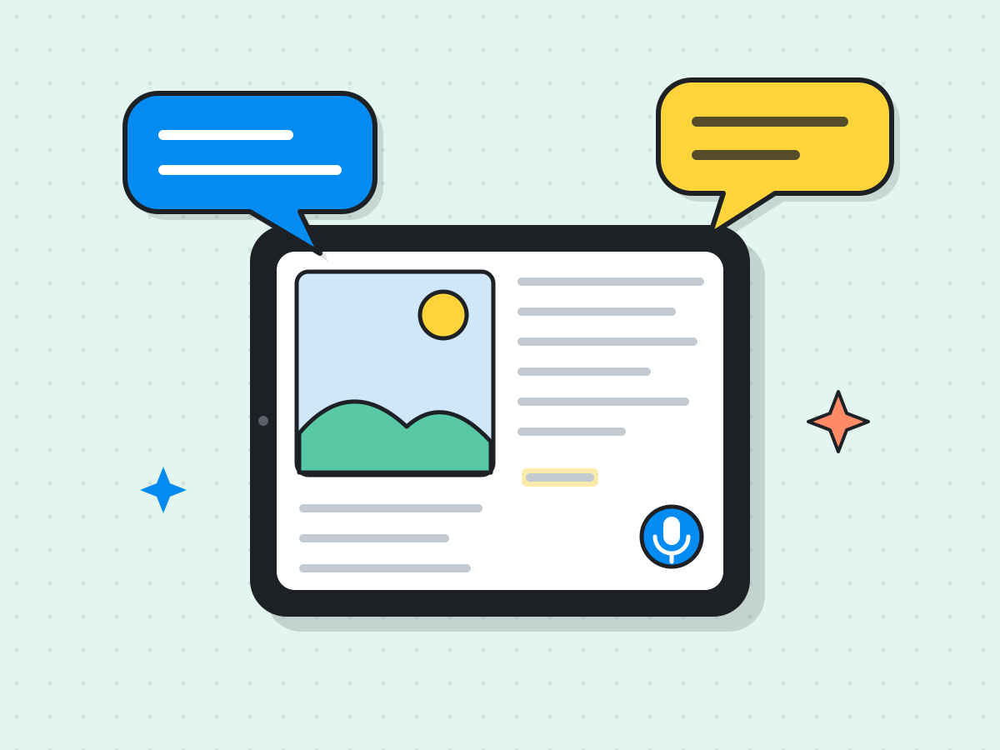
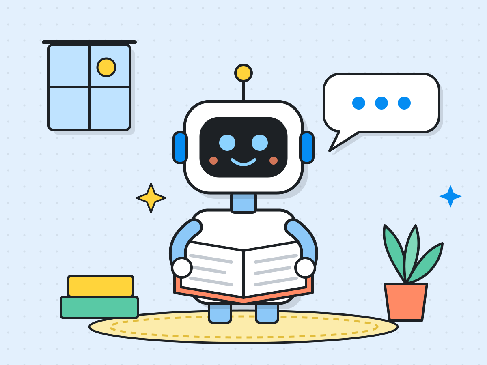

AI literacy
Elementary AI
Bringing AI concepts into elementary English Language Arts and math through storybooks, AI toys, and hands-on activities, with teachers in six rural North Carolina schools.
[Read more →]
Bringing AI concepts into elementary English Language Arts and math through storybooks, AI toys, and hands-on activities, with teachers in six rural North Carolina schools.
[Read more →]
Picture books are often children's first introduction to AI. We analyzed 57 AI literacy books for ages 5–8 to see which ideas about AI they teach and which they leave out.
[Read more →]
Generative AI that reads and creates stories with young learners: bilingual conversational agents for dialogic reading, and StoryLab, which helps teachers make personalized stories.
[Read more →]
Social robots as learning companions in children's everyday lives, starting with an LLM-powered humanoid robot that reads AI literacy books with children ages 5–8.
[Read more →]